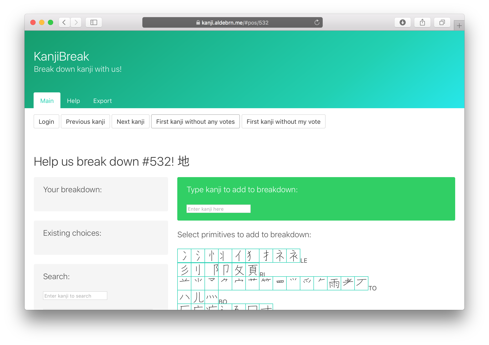

I am very pleased to announce a web app I’ve been working on: KanjiBreak!
It‚Äôs a tool to help create new databases for kanji/hanzi decomposition, i.e., kanji break-downs üòâ. If you‚Äôre familiar with Sino-Japanese writing, you know that a character like †¥ (‚Äúplace/area‚Äù) is made up of
- 土 (“ground”) on the left, then
- 日 (“sun” or “day”) on the top-right, below which we find
- 一 (“one”, the number) on top of
- 勿.
There are some two thousand kanji that the Japanese Ministry of Education requires students to know in order to graduate from high school (常用 漢字, where 常 means “common” and 用 “use”), and another nine hundred kanji permitted to be used in personal names (人名用 漢字, where 人 means “person” and 名 “name”, found in the original title of Makoto Shinkai’s most recent opus, Your Name: 君の名は, though the 名 here isn’t pronounced “mei”, but rather “na”).
With so many kanji, many have compiled databases of kanji breakdowns. Students of Japanese may be familiar with Andreas Foerster and Naoko Tamura’s Kanji ABC, James Heisig’s Remembering the Kanji, KanjiDamage, etc., designed to aid memorization of kanji. CJK data processing people might be familiar with GlyphWiki, Kradfile-u, KanjiVG, Pomax’s Indigo database (blog post), Gavin Grover’s database, IDSgrep, etc., which are helpful in font design or other analysis.
KanjiBreak goals
KanjiBreak aims to help people compile their own databases of kanji breakdown. Well. Really it’s a way for me to crowdsource the creation of The Ultimate Kanji Breakdown Database For Japanese Students but really, no single database will please everyone and so KanjiBreak shows you all breakdowns suggested for a given kanji—ranked by how popular that breakdown is—and you can either pick one of them as your favorite or create a new one. It is expected to be used by teachers and students and is aimed at collaboration.
To this end, visitors can download the entire database of breakdowns—all breakdowns for all kanji suggested by everyone—as a spreadsheet file or a SQLite database. A Dat feed of the data is also maintained! If you use Beaker Browser or Dat Desktop, please consider seeding dat://0d10fc7a0f4e54033f4787589ccf75e5746a89bad20f355f9f6d7b28804b3200, and spread the breakdown love with the full power of decentralized peer-to-peer sharing.
Although data sharing is a primary goal of the project, so is privacy. KanjiBreak needs to know which decompositions you submit, so it needs to be able to differentiate you from other users of the site, but it does not want to know who you are. Therefore, when you log in, using a service called Auth0, KanjiBreak immediately hashes your unique login name with the PBKDF2 key derivation function to get a meaningless string of letters and numbers that unqiuely identifies you (see the source code that does that and it‚Äôs caller ü§ì), and it associates that with your contributions. This ensures that, in some dystopian future where Sino-Japanese characters are banned, the fascists will only know that ‚Äúa9cb140e‚Ķ‚Äù is a kanji scholar, not you. (I just made up that hash.)
Unfortunately, this also means you can’t have friends on KanjiBreak—we only know you as “a9cb140e…” and can’t share your decompositions with your friend “6da3a290…” (also made up), since we don’t know who you two are.
(You do know how the system identifies you—if you’re logged in and download the decompositions database, your hash, “a9cb140e…” above, will be either in the filename and/or inside the file you downloaded. After you and your friend identify and exchange your hashes, you can locate each other’s contributions. For the strictest privacy, KanjiBreak has no mechanism to do that live on the website.)
Notes on breakdowns
Now for some notes on how the decompositions themselves work, as far as KanjiBreak is concerned.
Most importantly, KanjiBreak only cares about decomposition, not placement. It doesn’t use Unicode’s ideographic description characters (⿰⿱⿲⿳⿴⿵⿶⿷⿸⿹⿺⿻) to specify the spatial relationship between components. Sorry. Decomposition is a lot of work, placement is that much more work.
Next. KanjiBreak has so far taken a flexible stand on what characters are allowed to be used in decompositions, i.e., the allowed list of “primitives” or “radicals”. Of course all three thousand general-purpose and name kanji (jōyō and jinmeiyō) are permitted inside decompositions. But also permitted are roughly five hundred components that we adapted from Andreas Foerster and Naoko Tamura’s Kanji ABC. These five hundred components contain
- mostly jōyō and jinmeiyō kanji, as well as
- several non-standard kanji, i.e., available in Unicode and often used around the Sinic world, but not on any official Japanese list, e.g., 昜 or 帚;
- most traditional radicals, i.e., primitives that have been officially used in the Sinic world to break down kanji and coded by Unicode, e.g., most of the Kangxi radicals are here: 犭 or 扌;
- some non-traditional “radicals” that for various reasons are encoded by Unicode and widely supported by modern fonts, e.g., 丷 or 丆;
- and about forty-five completely-invented primitives, i.e., groups of strokes that Foerster and Tamura have identified as useful for kanji learners to memorize but are completely unofficial and unsupported by Unicode. Included in this set are two invented by me…
I think everyone can agree that while invented “primitives” from the last two groups are very useful for kanji learners, they should be kept to a minimum—especially since many are not supported by Unicode or fonts and therefore must be represented clumsily with SVG images and the like. I’ve added just eight characters with Unicode/font support and two without, to Foerster & Tamura’s list of primitives, and am open to adding more if the community requests it, especially if multiple jōyō and jinmeiyō kanji can be linked with the invented primitive.
Usage
The user interface for the app, currently at https://kanji.aldebrn.me/, is definitely confusing at first, and I intend to make a video of me decomposing a few characters to convey a sense of the workflow. In a nutshell, though, when you first visit https://kanji.aldebrn.me/, you’ll see this:

- You’re presented with the first kanji that doesn’t yet have a breakdown, above, 地, which means helpful volunteers have submitted at least one decomposition for 531 kanji and primitives—thank you!
- You can go to the previous and next kanji using the buttons at the top. The previous kanji, #531, our friend 場, will have at least one decomposition, and KanjiBreak shows it to you under “Existing choices”, and invites you to “Accept” this as your own.
- If you click “Accept” or “Login” or any of the primitives in blue boxes, you’re asked to log in. Currently we use Auth0 for GitHub and Twitter sign-ons.
- For any kanji or primitive, you can select primitive components by clicking the blue boxes. As you do so, they appear under “Your breakdown”.
- You can add a kanji component by entering it at “Type kanji to add to breakdown”.
- Click “Submit”, under “Your breakdown” to add your favorite decomposition. It will appear under “Existing choices” with a ✅.
- Feel free to edit your decomposition.
- Or to go on to the next kanji needing a breakdown. Or any kanji or primitive, a comprehensive list of all available jōyō and jinmeiyō kanji is provided underneath the primitives palette.
- Familiarize yourself with the organization of these primitives, derived from Foerster & Tamura’s Kanji ABC. Also described above, there are currently 469 primitives (maybe more when you read this). They are grouped into thirty-two sets, which are called
- “LE” for primitives found on the left of kanji,
- “RI”, meaning right,
- “TO”, top,
- “BO”, bottom,
- “EN”, enclosing primitives like 广 or ⻌,
- “FR”, fragmentary primitives like 丷, and finally
- twenty-six more groups, from “A” to “Z”—most groups contain related kanji (except “Z” which is a zoo).
- As you get familiar with where primitives are located, your breakdown speed will increase.
- Sometimes though, it’s easier to select a primitive by searching for a kanji that contains it and that you can swiftly produce with your keyboard IME or handwriting recognition. For this we have the “Search” box. Entering a kanji (or a primitive if it exists in Unicode) into the search box will display that query’s decomposition (if any) as well as any kanji for which someone used the query as a component; this search goes up and down the tree.
Programming notes
I am very excited to release this project because it is my first project in Elm, a statically-typed Haskell-derivative that compiles to JavaScript and designed from the ground up for browser apps. My previous browser front-ends were in plain JavaScript or ClojureScript. In a nutshell, I love Elm. And for the first time, I felt loved by a programming language—in the sense that, the gestalt of the libraries’ designs, format-on-save, the famously user-friendly error messages next to the offending underlined line, and the protection of static types, all worked to help and protect me. I’m writing this blog post a few months after finishing the app (though it is dated to just after the last major commit), but I am confident that I can go back and make changes to it easily, which is not the case for even my ClojureScript app (let alone my JavaScript apps).
The only drawbacks to Elm were minor for me but will probably hurt for a few. I think the phrase “boilerplate” refers to the sequence of 2–3 steps you have to do each time you add a new event handler—after you finish the view and add the handler, you might extend the model type, then extend the message type; if you need to make a network request, add the JSON decoder, and add the response handler, which means repeating the steps again. This is a little tiring but I can tolerate this foible. The Elm Architecture was familiar to me through my experience with the re-frame ClojureScript front-end library, and is closely related to the Redux model. Despite the detailed tutorials and examples produced by the Elm community, learning this architecture is likely to be one of the weirder dances a programmer has to learn, which is a fixed, up-front cost to entry.
The server backend part of the web app (i.e., the piece that runs on the computer I rent from a data center in New York) is in plain JavaScript and runs on Node.js. It is needed to store the data compiled by all its users, which is kept in a SQLite database. Going from Elm to JavaScript and back emphasized to me how comfortable and reliable Elm was, and how brittle JavaScript was. I would like to port the backend to PureScript, or to Elm whenever Elm comes to the backend (though apparently it will likely not be to Node.js).
It was fun to get back to writing SQL—though this app is by all accounts fairly small, it used some advanced SQL features. Aficionados can critique my longest SQL command, which searches for all decompositions that use a given primitive (both up and down through its ancestors and its descendants). All 3200-odd “characters” (roughly three thousand kanji being decomposed plus roughly two hundred non-kanji primitives) are nodes in a cyclic directed graph, with decompositions as edges, and as mentioned above, it’s often useful to find the sub-graph of all nodes that indirectly touch a search target. This search is also the piece I’m most worried about breaking as the database grows—you can imagine searching for 一 (one) and getting thousands of decompositions…
Fine technical details
If you’ve used the site a little, you’ve seen that I display a big box of primitives that serve as a palette, or a box of types (as in, lead type, printing presses, etc.). These are rendered as SVG, for aesthetic uniformity but also because a handful of primitives aren’t available in Unicode.
Life outside Unicode is a little rough—think Little House on the Prairie, or *Firefly*’s “savage outer planets” (so awesome). Andrew West’s BabelStone Han PUA Font is a monumental achievement: he maintains a database and font containing several thousand non-standard characters that are nonetheless useful for various reasons. He was kind enough to add several for me as I went through Foerster & Tamura’s set of primitives in Kanji ABC! These characters live in the private use area (PUA) of Unicode, the hundred-thousand or so codepoints promised to be left unspecified. Software encountering a PUA character can render it if any font claiming to support that codepoint is available, so one option could have been to use the BabelStone PUA webfont on KanjiBreak.
I chose to go SVG, from the great KanjiVG project, mainly for one silly reason: I don‚Äôt like the pointy serifs in the BabelStone Han PUA üôÉ. I also expect to (slowly) add the number of primitives, and am considering allowing users to create their own primitives (though KanjiBreak would not show these to others to ensure interoperability).
Because of this decision, I had to carve a hundred SVGs for primitives that either weren‚Äôt in KanjiVG or weren‚Äôt even in Unicode. When I started this process, I didn‚Äôt know if it was doable so the code to do this is utter üí©. For each primitive not in KanjiVG, I identified a kanji that was in KanjiVG, identified the stroke numbers that represented the primitive I was after, and tabulated it all into a few tab-separated-value TSV files.
Maybe I should switch to the Han PUA font‚Ķ üòÖ.
To summarize, I learned a lot from this project. Starting with the fact that kanji are pretty complicated—today we have computers and they actually constrain (but not stop) the creation of new kanji, which happened much more freely in the age of brush and ink. So kanji are very rich in quirks, which to me is nearly intoxicating.
But also I enjoyed playing with Dat, SQL, and most of all, Elm. I hope you enjoy using the website, please get in touch!